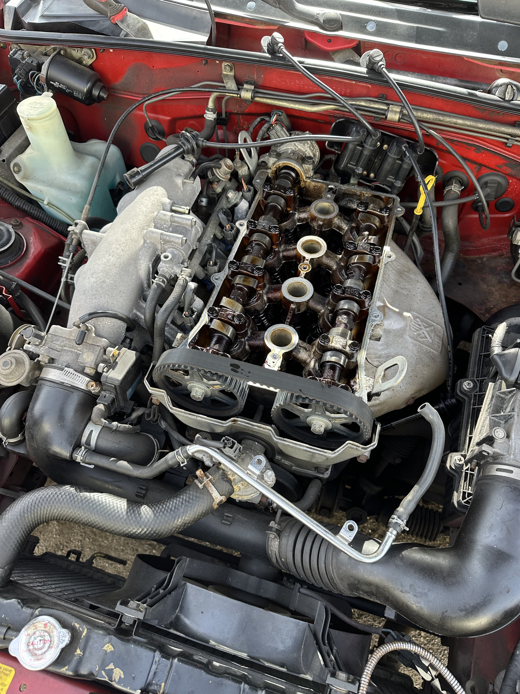
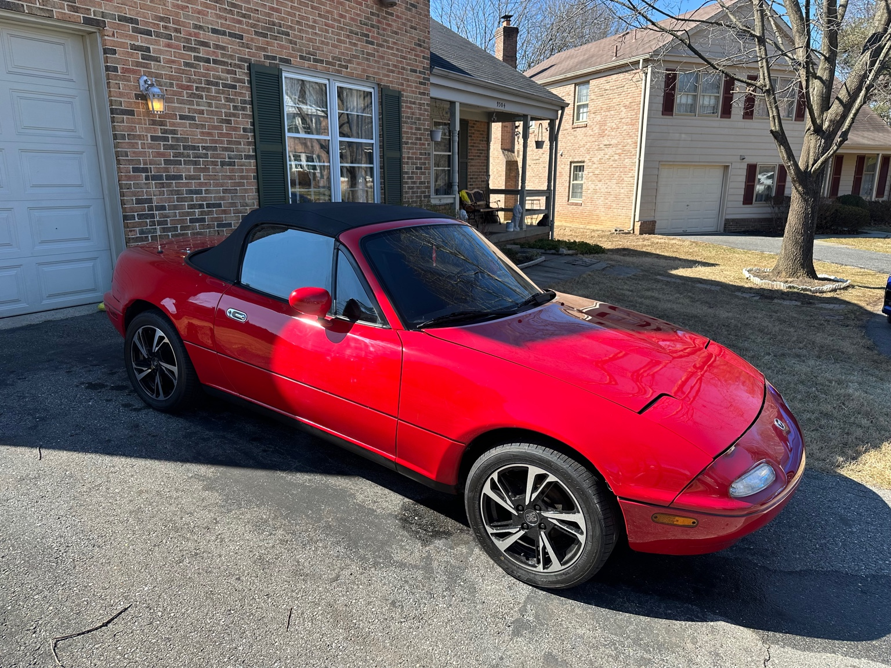
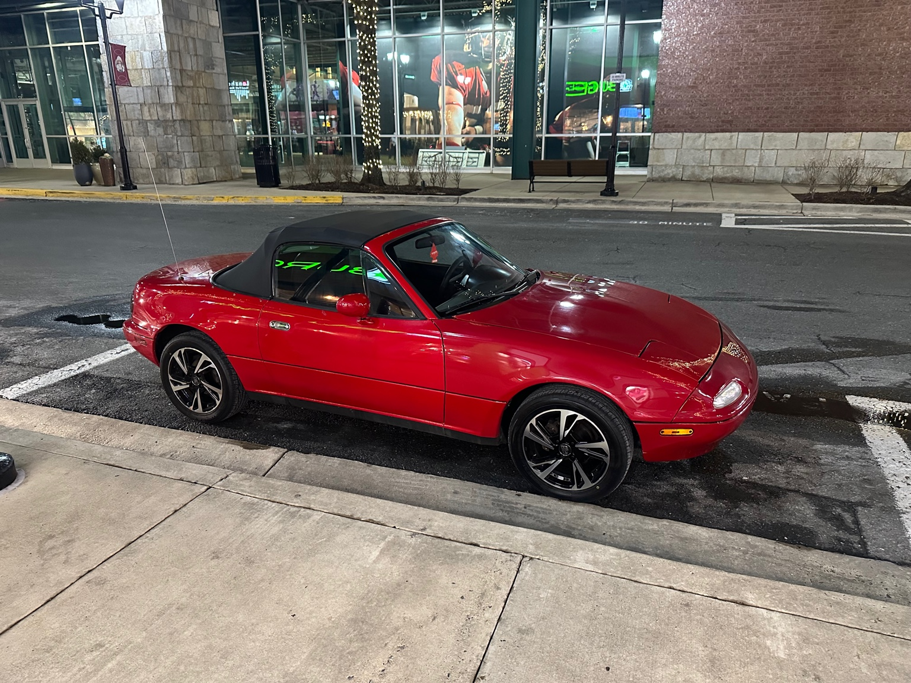
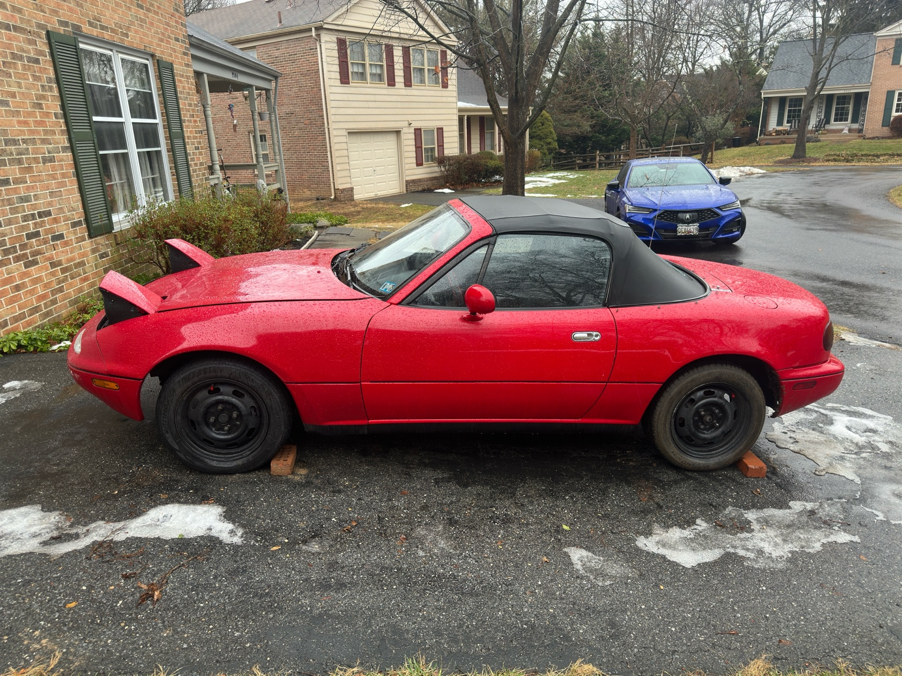
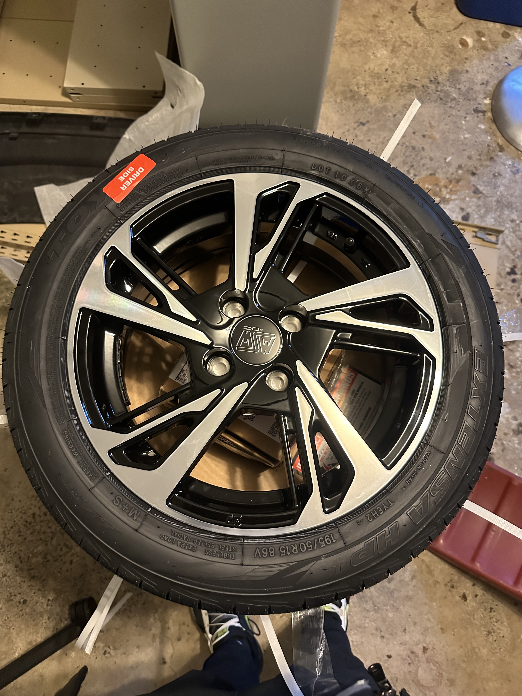
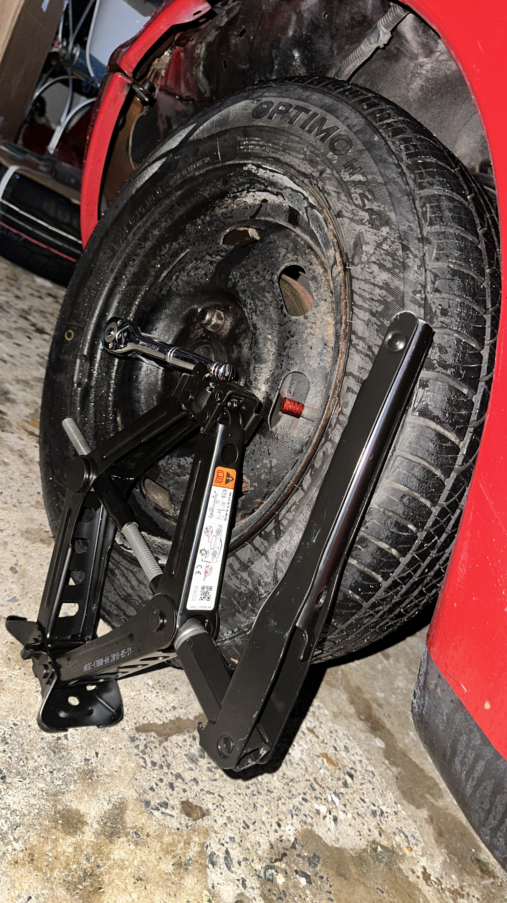
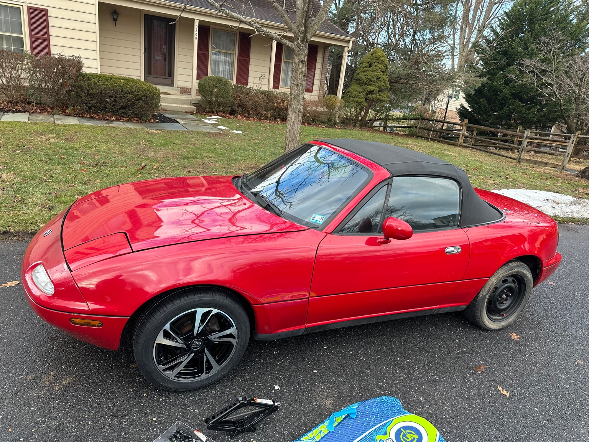
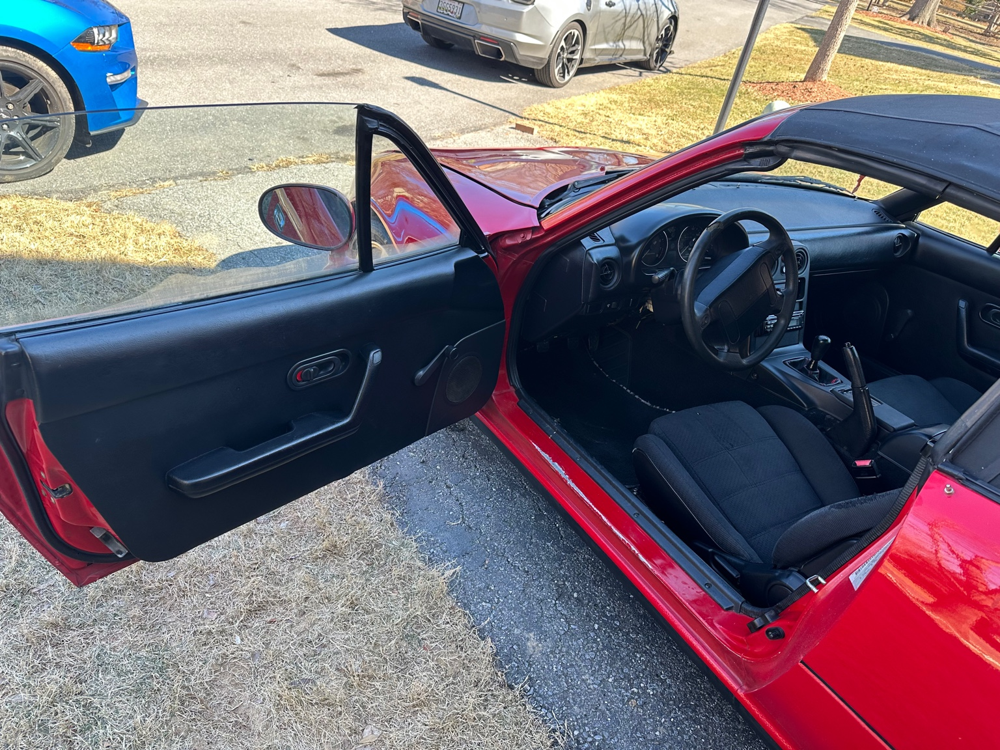
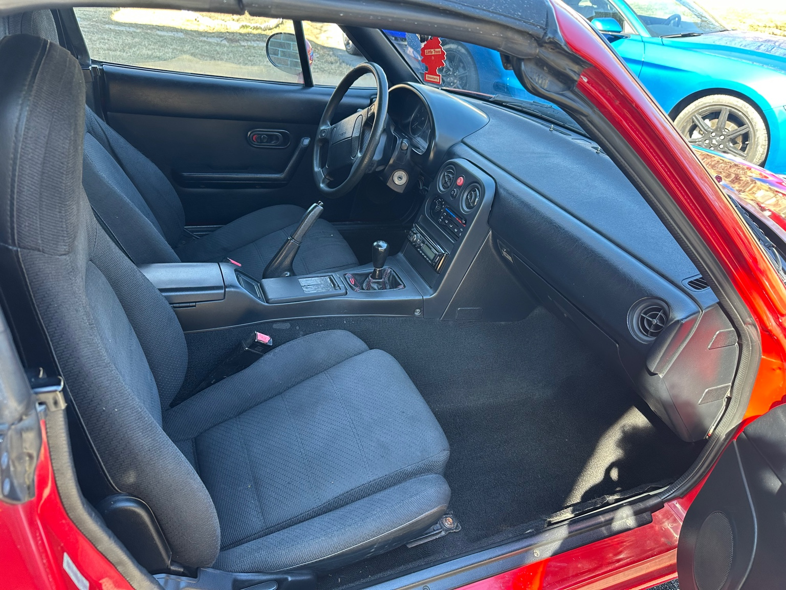

Major Systems
Major Systems
Ignition System
Replaced all four NGK spark plugs. Removed each one using a torque wrench and cleaned up the plug holes before installation. Installed new coil packs to eliminate misfires. (had to keep them in the right order). Also due to some issues with bogging, I tried cleaning the AFM sensor carefully and learned the hard way not to mess with the solder joints because killed the AFM. After 3 replacements the car still won't run. So dont touch the AFM ever. Also replaced the head gasket cover to seal an oil leak
Fuel System
Used a full bottle of Lucas Fuel Injector Cleaner added to the gas tank before a refill. This helped clean out the injectors after some rough idling. Definitely noticed a smoother throttle response within 20 minutes of driving.
Exterior Detailing
Started with a full wash using Armor All foamy soap and a microfiber mitt. Dried with clean towels. Applied Meguiar’s Ultimate Compound to a foam cutting pad, dotted it on, then worked it in with a DA polisher. Wiped clean with microfiber. Followed with Meguiar’s Finishing Polish on a polishing pad, then sealed with Spray Wax. Faded trim was restored using Meguiar’s Ultimate Black.
 Brakes
Installed PowerStop Z23 Evolution pads and drilled/slotted rotors. Front and rear. Cleaned the hub surface, greased slide pins, and bled each corner with DOT4 fluid using the two-person method. Pedal feel is 100x better.
Suspension and Tires
Swapped the old wheels for a fresh set of OZ wheels wrapped in Hancook tires. Torqued the lugs in a star pattern and got an alignment the next day. Cleaned up the fender wells while I had the wheels off.
   Interior Refresh
Installed a new Nardi Torino steering wheel, replaced the AC control panel, and cleaned the entire interior using Meguiar’s Leather and Vinyl Restorer. Finished with a new set of LED interior lights. Even the tombstone trim got swapped out with a cleaner version.
 